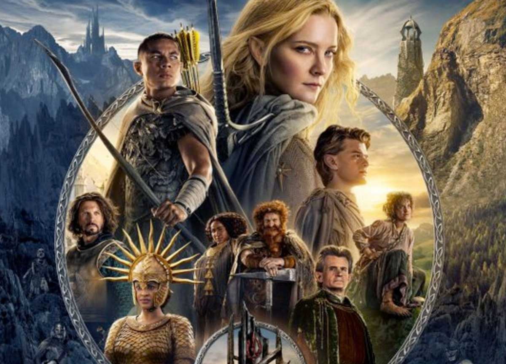

Gli Anelli del Potere
Il Signore degli Anelli - Gli Anelli del Potere (The Lord of the Rings: The Rings of Power) è una serie televisiva statunitense creata da J. D. Payne e Patrick McKay e prodotta da Amazon MGM Studios. Basata sul romanzo Il Signore degli Anelli di J. R. R. Tolkien e sulle sue appendici, la serie è ambientata nella Seconda Era della Terra di Mezzo; migliaia di anni prima degli eventi raccontati in Lo Hobbit e Il Signore degli Anelli. L'adattamento, prodotto in collaborazione con New Line Cinema, porta per la prima volta sullo schermo le leggende della mitica Seconda Era della storia della Terra di Mezzo. Partendo da un momento di relativa pace, i personaggi si preparano a fronteggiare il lungamente temuto ritorno del male nella Terra di Mezzo. La serie copre i principali eventi dell'Era: dalla forgiatura degli Anelli del Potere, all'ascesa dell'Oscuro Signore Sauron, fino alla caduta del regno insulare di Númenor e all'ultima alleanza tra Elfi e Uomini.
-

Stagione 1
Sauron, segretamente desideroso di dominio, convince Celebrimbor e i suoi artefici elfici a forgiare gli Anelli di Potere. Tuttavia, Sauron ha un piano oscuro: nasconde nel segreto l'Anello Unico, controllato solo da lui, che gli conferirà il potere di schiavizzare tutte le razze di Arda. La serie segue anche altri importanti personaggi e culture della Terra di Mezzo. Gli Uomini di Númenor, guidati da re Elendil e i suoi figli Isildur e Anárion, sono potenti alleati degli Elfi ma iniziano a cadere sotto l'influenza corrotta di Sauron. Intrecciati nella narrazione ci sono anche gli Entri, antiche creature guardiane della foresta, e la presenza costante delle forze oscure di Mordor, mentre Sauron inizia a rivelare la sua vera identità e le sue ambizioni malvagie. La stagione esplora il tema della tentazione del potere e del tradimento, mentre i personaggi devono affrontare decisioni difficili in un mondo in rapido cambiamento. Emergono amicizie, alleanze e rivalità che plasmeranno il destino della Terra di Mezzo nei secoli a venire.